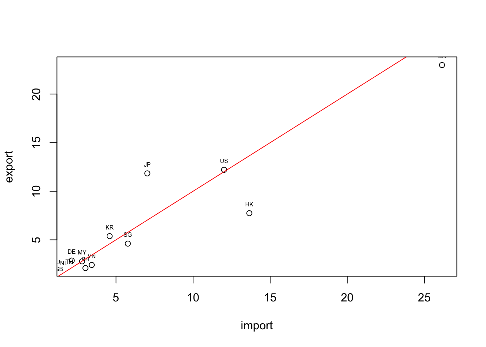

Chapter 4 Dataframe
4.1 基本操作
4.1.1 產生新的Dataframe
4.1.1.1 複製資料至vector
直接複製Wikipedia上的台北市某五區人口資料
population <- c(158228, 126687, 228075, 204903, 308383, 187920)
town <- c("中正", "大同", "中山", "松山", "大安", "萬華")
area <- c(7.6071, 5.6815, 13.6821, 9.2878, 11.3614, 8.8522)4.1.1.2 合併等長vector為dataframe
df <- data.frame(town, population, area)
df$density = df$population / df$area
str(df)## 'data.frame': 6 obs. of 4 variables:
## $ town : chr "中正" "大同" "中山" "松山" ...
## $ population: num 158228 126687 228075 204903 308383 ...
## $ area : num 7.61 5.68 13.68 9.29 11.36 ...
## $ density : num 20800 22298 16670 22062 27143 ...summary(df)## town population area density
## Length:6 Min. :126687 Min. : 5.681 Min. :16670
## Class :character 1st Qu.:165651 1st Qu.: 7.918 1st Qu.:20907
## Mode :character Median :196412 Median : 9.070 Median :21645
## Mean :202366 Mean : 9.412 Mean :21700
## 3rd Qu.:222282 3rd Qu.:10.843 3rd Qu.:22239
## Max. :308383 Max. :13.682 Max. :27143# View(df)4.1.1.3 存放台灣貿易各國進出口量
- 運用台灣出口進口資料 台灣出口進口貿易資料查詢
country <- c("CN", "US", "JP", "HK", "KR", "SG", "DE", "MY", "VN", "PH", "TH", "AU", "NL", "SA", "ID", "GB", "IN", "FR", "IT", "AE")
import <- c(26.142, 12.008, 7.032, 13.646, 4.589, 5.768, 2.131, 2.802, 3.428, 3.019, 1.976, 1.118, 1.624, 0.449, 0.983, 1.302, 1.027, 0.553, 0.670, 0.455)
export <- c(22.987, 12.204, 11.837, 7.739, 5.381, 4.610, 2.866, 2.784, 2.414, 2.092, 1.839, 1.788, 1.665, 1.409, 1.391, 1.075, 0.974, 0.899, 0.800, 0.728)4.1.1.4 合併vector為data.frame
這時候我們若以
str(df)觀察該df的結構會發現，文字型態的資料被轉為Factors，這是我們所不樂見的。過去統計通常會把文字型態當成類別變數，於是用Factors作為資料型態，但資料科學中經常要處理大量的文字資料，此時，我們可以把read.csv的一個參數stringsAsFactors設為FALSE，意味著預設不要將文字的資料轉為Factor而是直接以文字變項來處理。*stringsAsFactors = FALSE也是read.csv()的參數（parameter、argument）。因為一般讀檔會預設把文字讀為類別變項也就是Factor，但資料分析經常要處理文字資料而不是類別變項，所以會希望預設不要把文字讀取為類別變項，因此要設定stringsAsFactors = FALSE。為了避免每次都要打這串參數，可以把它設定為全域參數，可以在程式一開始時便加上
options(stringsAsFactors = FASLE)，意味著底下所有的函式如果有stringsAsFactors這個參數，一律自動設為FALSE。
df <- data.frame(country, import, export)
str(df)## 'data.frame': 20 obs. of 3 variables:
## $ country: chr "CN" "US" "JP" "HK" ...
## $ import : num 26.14 12.01 7.03 13.65 4.59 ...
## $ export : num 22.99 12.2 11.84 7.74 5.38 ...df <- data.frame(country, import, export, stringsAsFactors = FALSE)
str(df)## 'data.frame': 20 obs. of 3 variables:
## $ country: chr "CN" "US" "JP" "HK" ...
## $ import : num 26.14 12.01 7.03 13.65 4.59 ...
## $ export : num 22.99 12.2 11.84 7.74 5.38 ...- 甚至也可以建立一個新的、空的
data.frame。 df.test就R的用法就是一個變數，並不是df和test各自是一個變數。
df.test <- data.frame()4.1.2 觀察dataframe
View(df)用RStudio所提供的GUI直接觀看變數head(df)取前面六筆資料（也就是六列的資料來概觀該資料）class(df)str(df)summary(df)
# View(df)
head(df) # get first part of the data.frame## country import export
## 1 CN 26.142 22.987
## 2 US 12.008 12.204
## 3 JP 7.032 11.837
## 4 HK 13.646 7.739
## 5 KR 4.589 5.381
## 6 SG 5.768 4.610class(df)## [1] "data.frame"str(df)## 'data.frame': 20 obs. of 3 variables:
## $ country: chr "CN" "US" "JP" "HK" ...
## $ import : num 26.14 12.01 7.03 13.65 4.59 ...
## $ export : num 22.99 12.2 11.84 7.74 5.38 ...summary(df)## country import export
## Length:20 Min. : 0.449 Min. : 0.728
## Class :character 1st Qu.: 1.016 1st Qu.: 1.312
## Mode :character Median : 2.054 Median : 1.966
## Mean : 4.536 Mean : 4.374
## 3rd Qu.: 4.884 3rd Qu.: 4.803
## Max. :26.142 Max. :22.987# look up help
help(summary)
?summary4.1.3 操作dataframe
4.1.3.1 取出一個變項
names(df)列出變數名稱df$發生.現.地點顯示該變數內容df$發生時段顯示該變數內容length(df$發生時段)顯示該變數的長度（相當於有幾個）
names(df)## [1] "country" "import" "export"head(df$發生.現.地點)## NULLhead(df$發生時段)## NULLlength(df$發生時段)## [1] 0summary(df)## country import export
## Length:20 Min. : 0.449 Min. : 0.728
## Class :character 1st Qu.: 1.016 1st Qu.: 1.312
## Mode :character Median : 2.054 Median : 1.966
## Mean : 4.536 Mean : 4.374
## 3rd Qu.: 4.884 3rd Qu.: 4.803
## Max. :26.142 Max. :22.9874.1.3.2 (mutate)透過運算產生新變數
- 這裡容易犯錯的是，要記得跟程式講說你要加總或四則運算的是哪個df的variable。
- 從下面的這個操作中，該data.frame會產生一個新的變數
sub，這就相當於Excel中的某一行減去某一行，然後把資料放在新的一行。
df$sub <- df$import - df$export4.1.3.3 (filter)篩選資料、選取變數
注意，要告訴程式
import和export是哪個data.frame的。df[,]為存取df中某個區段的數值或某個數值的方法。因此df[1, 1]會取出第一行第一列，也就是第一筆資料的第一個vector。df[2, 3]則會取出第二筆資料的第三個variable。下面的例子
nrow(df)為1894，有1894筆資料，所以自然df\(import與df\)export的長度都是1894。因此，比較這兩個變數的大小會得到一個長度為1894的boolean (logical) variable。因此把這個長度為1894、充滿TRUE和FALSE的logical vector丟進df的row之處，因為取自df，大小判斷式結果的長度自然和原本的df的列數相同。因此當這個TRUE/FALSE被丟在df的列之處，便會篩選出import大於p.xport的數值。原本的df有五個variable，而上述的操作是篩選資料，所以被篩選的是列，因此行的數量、名稱都不會變。因此，我篩選完後，直接存取這個被篩選過的data.frame的country variable，自然是可以的。
df## country import export sub
## 1 CN 26.142 22.987 3.155
## 2 US 12.008 12.204 -0.196
## 3 JP 7.032 11.837 -4.805
## 4 HK 13.646 7.739 5.907
## 5 KR 4.589 5.381 -0.792
## 6 SG 5.768 4.610 1.158
## 7 DE 2.131 2.866 -0.735
## 8 MY 2.802 2.784 0.018
## 9 VN 3.428 2.414 1.014
## 10 PH 3.019 2.092 0.927
## 11 TH 1.976 1.839 0.137
## 12 AU 1.118 1.788 -0.670
## 13 NL 1.624 1.665 -0.041
## 14 SA 0.449 1.409 -0.960
## 15 ID 0.983 1.391 -0.408
## 16 GB 1.302 1.075 0.227
## 17 IN 1.027 0.974 0.053
## 18 FR 0.553 0.899 -0.346
## 19 IT 0.670 0.800 -0.130
## 20 AE 0.455 0.728 -0.273names(df)## [1] "country" "import" "export" "sub"nrow(df)## [1] 20# filter row data by column value
df[df$import > df$export,]## country import export sub
## 1 CN 26.142 22.987 3.155
## 4 HK 13.646 7.739 5.907
## 6 SG 5.768 4.610 1.158
## 8 MY 2.802 2.784 0.018
## 9 VN 3.428 2.414 1.014
## 10 PH 3.019 2.092 0.927
## 11 TH 1.976 1.839 0.137
## 16 GB 1.302 1.075 0.227
## 17 IN 1.027 0.974 0.053df[df$import > df$export,]$country## [1] "CN" "HK" "SG" "MY" "VN" "PH" "TH" "GB" "IN"df[df$import > df$export,1]## [1] "CN" "HK" "SG" "MY" "VN" "PH" "TH" "GB" "IN"# 1 row == a data.frame with only one data entry
class(df[df$import > df$export,1])## [1] "character"class(df[,1]) # character vector## [1] "character"class(df[1,]) # data.frame## [1] "data.frame"class(unlist(df[1, -1])) # filter the 1st row and select all columns except 1## [1] "numeric"4.1.3.4 (arrange) 按某個變數排序
df.sorted <- df[order(df$import),]會使得整個df照import的大小排序重新做排列。因為order(df$import)會把資料照指定順序排列後的位置傳回來，所以把他丟給df的列的位置，便會使得df的資料照指定的順序排列。 預設是由小到大，加上decreasing = T這個參數後變成由大而小。
# sort rows by df$import column
df.sorted <- df[order(df$import),]
# View(df.sorted)
# sort rows in decreasing order
df.sorted <- df[order(df$import, decreasing = T),]
# add - to column in order() can sort in decreasing order
df.sorted <- df[order(-df$import),]
head(df.sorted)## country import export sub
## 1 CN 26.142 22.987 3.155
## 4 HK 13.646 7.739 5.907
## 2 US 12.008 12.204 -0.196
## 3 JP 7.032 11.837 -4.805
## 6 SG 5.768 4.610 1.158
## 5 KR 4.589 5.381 -0.7924.2 簡易繪圖
graphics::plot()為會預載入R的繪圖套件，如果希望繪圖的同時加上回歸線和資料點標籤的話，必須要三行一起執行。
# plot(df) # raise error, 1st column is a character vector
plot(df[, 2:3])
plot(df[1:10, 2:3])
text(import, export, labels=country, cex= 0.5, pos=3)
lines(1:25, 1:25, col='red')
?plot## Help on topic 'plot' was found in the following packages:
##
## Package Library
## graphics /Library/Frameworks/R.framework/Versions/4.1/Resources/library
## base /Library/Frameworks/R.framework/Resources/library
##
##
## 用第一個符合…4.3 基本操作：使用dplyr
library(dplyr)
df <- data.frame(country, import, export, stringsAsFactors = F)
df <- mutate(df, sub = import - export)
filter(df, import > export)## country import export sub
## 1 CN 26.142 22.987 3.155
## 2 HK 13.646 7.739 5.907
## 3 SG 5.768 4.610 1.158
## 4 MY 2.802 2.784 0.018
## 5 VN 3.428 2.414 1.014
## 6 PH 3.019 2.092 0.927
## 7 TH 1.976 1.839 0.137
## 8 GB 1.302 1.075 0.227
## 9 IN 1.027 0.974 0.053select(df, c(1, 3))## country export
## 1 CN 22.987
## 2 US 12.204
## 3 JP 11.837
## 4 HK 7.739
## 5 KR 5.381
## 6 SG 4.610
## 7 DE 2.866
## 8 MY 2.784
## 9 VN 2.414
## 10 PH 2.092
## 11 TH 1.839
## 12 AU 1.788
## 13 NL 1.665
## 14 SA 1.409
## 15 ID 1.391
## 16 GB 1.075
## 17 IN 0.974
## 18 FR 0.899
## 19 IT 0.800
## 20 AE 0.728message(df$country)
print(df$country)## [1] "CN" "US" "JP" "HK" "KR" "SG" "DE" "MY" "VN" "PH" "TH" "AU" "NL" "SA" "ID"
## [16] "GB" "IN" "FR" "IT" "AE"4.4 tibble, data_frame, data.frame
警告： "data_frame()" was deprecated in tibble 1.1.0. Please use "tibble()" instead.
df <- data.frame(a=1:2, b=3:4, c=5:6)
class(df)## [1] "data.frame"df <- data_frame(a=1:2, b=3:4, c=5:6)
class(df)## [1] "tbl_df" "tbl" "data.frame"df <- tibble(a=1:2, b=3:4, c=5:6)
class(df)## [1] "tbl_df" "tbl" "data.frame"